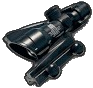
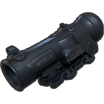
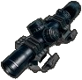
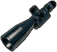
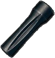
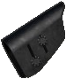
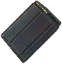

|
|
| 장탄수 | 5 |
| 발사 모드 | 단발 |
| 몸통 기본 | 82.5~61.875 |
| 몸통 Lv1 | 57.8~43.35 |
| 몸통 Lv2 | 49.5~37.125 |
| 몸통 Lv3 | 37.1~27.825 |
| 머리 기본 | 187.5~140.625 |
| 머리 Lv1 | 131.3~98.475 |
| 머리 Lv2 | 112.5~84.375 |
| 머리 Lv3 | 84.38~63.285 |
| 팔/다리 | 35.6~26.7 |
| 저지력 | 16000 |
| 탄속 | 760m/s |
| 연사 간격 | 1.900초 (약 32RPM) |
| 재장전 시간 (전술 재장전) | 4000초 (1.690초 / 0.750초) |
| 영점 거리 | 100 - 500 |
| 탄퍼짐 | 8.0 |
| MOA | 0.7 |
| 피해감소거리 | 101~486m |
| 등장 지역 | 에란겔, 미라마 |
| 조준경 |  |
 |
 |  |  |  |  |
 |
|---|---|---|---|---|---|---|---|---|
| 총구 |  |
 |
 | |||||
| 개머리판 |  |
일명 카구팔. 극단적인 성능 때문에 갓구팔 또는 잼구팔이라 불리기도 한다. 탄 클립을 사용하기 때문에 SR용 탄창 부착물을 장착할 수 없는 대신 탄퍼짐을 줄이고 장전 속도를 높여주는 개머리판 부착물인 탄띠를 부착할 수 있다.
1레벨은 물론 2레벨 헬멧까지도 헤드샷을 맞히면 원샷원킬이 가능하다. 적을 바로 사망시킬 수 있는 솔로 경기는 물론이고 팀원의 도움으로 부활이 가능한 듀오 및 스쿼드 경기라 할지라도 헤드샷으로 인해 쓰러졌다면 다시 일어날 때 헬멧이 깨진 상태이기 때문에 돌격소총 탄환에도 한 방에 죽게 되어 맞은 입장에서는 무진장 골치 아프다. 3레벨 헬멧이라고 한 대 맞아도 되겠다고 여긴다면, 헬멧 내구도가 거의 90%정도나 까여서 새빨간 색이 되고 체력도 거의 남지 않기 때문에 뭐라도 한 대 더 맞으면 바로 죽는 상태가 된다. 상대가 Kar98k를 들고있는 게 확인되면 q,e 키를 이용한 기울이기나 와리가리 등을 활용해 최대한 머리에 총알이 맞지 않도록 하자.
그러나 7.62mm를 사용하기 때문인지 탄속이 느리고 탄낙차도 꽤 큰 편이다. 거기다 헤드샷과 달리 이외의 부위에 맞히는 이른바 '몸샷'으로 죽이려면 최소 3발을 맞혀야 한다고 보면 된다. 참고로 상대가 방탄복을 입었다는 가정 하에서 5.56mm 계열 돌격소총은 몸샷 4~5방, Kar98k와 같은 7.62mm 탄약을 사용하는 AKM이나 Groza로 몸샷 3~4방이면 적을 처치할 수 있다. 즉 Kar98k로 머리 이외의 부위를 맞힐 바엔 차라리 돌격소총이나 DMR 단발광클으로 맞히는 게 훨씬 낫다는 것. 또한 초탄 처치를 실패했다면 당연히 대상은 도망치면서 점점 멀어지고 타겟이 최대한 무빙을 하면서 총알을 피하려 한다는 것을 생각하면 이후에는 명중률이 곤두박질을 친다. 이런 특징이 가장 크게 체감되는 경우가 밀리터리 베이스, 학교, 병원 등 초반부터 근거리 난전이 벌어지는 곳에 떨어져서 첫 무기로 주운 것이 이 것인 경우로 나름 총인 주제에 초탄 헤드샷이 빗나가면 주먹질에도 패배한다. 정면 교전에서 Kar98k로 재빠르게 헤드샷을 노린다는 건 매우 어려운 일이기 때문에 끌어치기를 기가막히게 잘 하거나 적이 눈치채지 못하고 가만히 있을 때 헤드샷을 노리는 용도로만 저격소총의 역할을 수행할 수 있다. 때문에 사격 직후 조준 상태를 해제하지 말고 탄환의 궤적을 살펴본 뒤 낙차를 보정하는 것이 좋다.
장전된 탄들이 완전히 비면 탄 클립으로, 총에 잔탄이 남아있으면 단발로 장전하는 방식이 구현되어 있다. 장시간 교전 중이고 은엄폐가 목숨과 직결되는 상황이 아니라면 5발을 모두 쓰고 장전하는 편이 낫다.
제2차 세계 대전 시절의 총기임에도 도트 사이트나 ACOG와 같은 현대적 광학 장비를 달 수 있어 꽤나 이질감이 심하지만 현실에서도 위버 레일을 비롯한 레일 시스템을 장착하는 식으로 고전 총기들을 이른바 마개조하는 경우도 있으므로 불가능한 묘사는 아니다. 의외로 2차대전 당시 물건인데도 전용 소음기가 있었는데, "HUB-23"이라는 제식명으로 제2차 세계 대전 당시에 사용되었다.
한편, 실총이 사용하는 탄약의 구경은 7.92mm이지만 PUBG에서는 7.62mm 탄약을 사용한다. 따라서 PUBG의 맵의 동구권 배경에 어울리도록 모신나강 소총을 등장시키지 않고 대신 Kar98k 소총을 등장시킨 것에 대한 의문이 제기되곤 하는데, 개발비화를 보면 개발 초기에 예산이 적고 개발 기간도 짧다보니 지형지물이나 총기 등을 직접 만들지 않고 에셋(Asset)으로 있는 걸 다운받아서 넣었는데, 원래 계획했던 총기가 에셋으로 존재하지 않는다면 시간과 예산상의 문제로 새로 만드는 게 아니라 그냥 총을 바꿔버렸다. 때문에 Kar98k도 원래 들어가려던 모신나강이 에셋에 없자 비슷한 총을 대신 집어넣은 것.
얼리엑세스 기간 동안에는 필드드롭임에도 보급상자에서도 구할 수 있었던 유일한 무기였는데, 물론 성능이야 두말할 것 없지만 보급상자 리스크가 높은 데 반해 어쨌든 필드에서도 충분히 구할 수 있는 무기라 꽝취급을 받았다. 그래서인지 정식출시 직전에 보급상자에서 내려오게 되었다.
PC 1.0 버전 패치노트 #12에서 3렙 헬멧이 보급 한정으로 바뀐데다가 이 대격변 속에서 살아남은 숨은 강자 신세가 되며 사실상 승리자가 되었다. 하지만 이 때문에 블루홀이 Kar98k을 너무 밀어준다는 비판도 존재한다.
 |
|
| 장탄수 | 5(7) |
| 발사 모드 | 단발 |
| 몸통 기본 | 96.8~72.6 |
| 몸통 Lv1 | 67.8~50.85 |
| 몸통 Lv2 | 58.1~43.575 |
| 몸통 Lv3 | 43.6~32.7 |
| 머리 기본 | 220~165 |
| 머리 Lv1 | 154~115.5 |
| 머리 Lv2 | 132~99 |
| 머리 Lv3 | 99~74.25 |
| 팔/다리 | 41.8~31.35 |
| 저지력 | 20000 |
| 탄속 | 790m/s |
| 연사 간격 | 1.800초 (약 33RPM) |
| 재장전 시간 (전술 재장전) | 4.200초 (1.800초) |
| 영점 거리 | 100 |
| 탄퍼짐 | 7.5 |
| MOA | 0.33 |
| 피해감소거리 | 121~580m |
| 등장 지역 | 에란겔, 미라마 |
| 조준경 | |
|
|
|
||||
|---|---|---|---|---|---|---|---|---|
| 총구 | |
|
||||||
| 탄창 |  |  |
 |
|||||
| 개머리판 |
필드드랍 저격소총. 성능은 더도말고 덜도말고 딱 Kar98k 상위호환이라서 Kar98k와 마찬가지로 2레벨 헬멧까지도 헤드샷 한방 처치가 가능하다. 게다가 피해량은 약간 더 높고 탄창식 장전 덕분에 기본 장전 속도도 더 빠르고 대용량 탄창을 장착할 수도 있다. 탄속은 살짝 더 빠르며 그만큼 더 작은 낙차를 지녔다. 발사음은 중저음이라 '탕'보다는 쾅하는 느낌으로 상당히 묵직하지만 소음기를 장착했을 때엔 발사음이 마치 사진 플래시 터트리는 소리처럼 바뀌어 듣다보면 이 매력적인 특징 때문에 카메라라는 별명이 있다.
본래 보급 상자 전용 무기였고 피해량도 AWM 다음 수준이여서 대미지가 조금 약한 대신 7.62mm를 쓰기 때문에 탄 수급이 용이한 AWM 취급을 받았지만 2018년 5월 3일자 #14 패치 이후로 기본 공격력이 88에서 79로 하락하고 필드 드랍으로 변경되었다. SR 가짓수를 늘리고 범용적으로 사용할 수 있게 하기 위한 패치라고 한다. 총 대미지는 79(변경 후 피해량)×250%(헤드샷)-55%(3뚝 방어력)=88.875 이며 3레벨 헬멧 기준 내구도 197을 깎을 수 있다.
하지만 이번 M24 필드드랍 패치는 유저들에게 엄청난 충격과 동시에 그 주제에 대한 열띤 토론장이 펼쳐지도록 만들었다. M24의 필드드랍화를 통해 kar98k는 가차없이 버려질 것이라는게 대부분의 의견이다. 앞서 말했듯이 M24의 성능은 '더도말고 덜도말고 딱 Kar98k 상위호환' 수준이기 때문이다. M24의 성능이 좋은 만큼 드랍율도 극악이지만 솔직히 체감상으로 kar98k의 드랍률도 극악인 것은 별반 다를게 없다.
결국 결과적으로 M24는 이번 패치로 극상향을 받았다. kar98k보다 모든 면에서 뛰어난데다 대미지 하향을 받고도 여전히 강력하고, 필드드랍이며 탄수급도 매우 편리하다. 희소성, 능률, 가치 등등의 균형을 잘 잡아오던 볼트액션 소총들이 이번 패치로 게임에 적잖은 영향을 주게 되었다. 따라서 이번 M24 필드드랍화 패치는 미완성된 업데이트이며, 앞으로의 볼트액션 소총에 대한 추가 업데이트 사항에 따라 이번 패치의 성공 여부가 갈리게 된다.
14차 패치 이후에 의도한 것은 아닌걸로 보이나 M24의 모델이 찰흙처럼 보이는 버그가 생겼다.
 |
|
| 장탄수 | 5(7) |
| 발사 모드 | 단발 |
| 몸통 기본 | 132~99 |
| 몸통 Lv1 | 92.4~69.3 |
| 몸통 Lv2 | 79.2~59.4 |
| 몸통 Lv3 | 59.4~44.55 |
| 머리 기본 | 300~225 |
| 머리 Lv1 | 210~157.5 |
| 머리 Lv2 | 180~135 |
| 머리 Lv3 | 135~101.25 |
| 팔/다리 | 57~42.75 |
| 저지력 | 40000 |
| 탄속 | 945m/s |
| 연사 간격 | 1.850초 (약 32RPM) |
| 재장전 시간 (전술 재장전) | 4.600초 (2.300초) |
| 영점 거리 | 100 - 1000m |
| 탄퍼짐 | 7.5 |
| MOA | 0.25 |
| 피해감소거리 | 151~687m |
| 등장 지역 | 에란겔, 미라마 보급전용 |
| 조준경 | |
|
|
|
||||
|---|---|---|---|---|---|---|---|---|
| 탄창 | |
|
||||||
| 개머리판 |
일명 에땁. 실총은 Arctic Warfare 시리즈의 한 종류인 Arctic Warfare Magnum. 영국군 제식 명칭 L115A1.
보급 상자에서만 얻을 수 있으며, 게임에서 가장 높은 단발 공격력과 우수한 탄속을 보유한 엄청난 파괴력을 지닌 저격소총이다. 보급상자 무기답게 120이라는, PUBG 총기 중 가장 높은 단발 피해량을 자랑해 헬멧의 레벨에 관계 없이 헤드샷으로 한방에 골로 보내버릴 수 있으며, 더불어 머리 이외에 팔다리나 몸에 맞히면 2발, 방탄복이 없다면 몸샷 1발로 쓰러트릴 수 있다. 특유의 폭탄 터지는 듯한 쾅!! 하는 묵직한 총성과 막대한 피해량 덕에 맞는 사람을 심리적으로 크게 위축시키는건 덤.
저 강력한 피해량에 더불어 저지력은 40,000 대로 PUBG 총기 전체 1위이자 20,000 대인 다른 저격소총의 2배에 달하는 수치이며, 탄속도 초속 945m로 총기 전체 2위인 최상위권이다.
장점만 보면 뭐 하나 아쉬운 점이 없는 것 같지만, 이 총을 마구 쏘지 못 하게 하도록 전용 탄약을 쓴다는 치명적인 단점이 있다. AWM이 먹는 전용 탄약인 .300 매그넘은 보급 상자에서 같이 나오는 20발이 전부고 이 외의 방법으로는 절대로 얻을 수 없다. SR 특성상 한 발 한 발 정성들여 쏴야 하는 것은 변함이 없지만 AWM은 그 중에서도 더욱 신중하게 사용해야 하는 것. 제아무리 피해량이 강력하다고 하지만, 몸샷은 당연히 탄약 낭비다. 머리가 아닌 몸통을 조준하고 쏘다간 금방 탄약이 부족해진다. 물론 솔로에서 머리에 대고 발씩 쏜다면 20발은 어지간히 헤프게 써도 중반부터 게임 끝날 때까지 사용할 수 있는 양이지만 듀오에서 스쿼드로 가면 갈수록 20발이란 양은 정말 부족해지기 때문에 마구 쏘고 다니다간 나중에는 아예 빈총이 되어 눈물을 머금고 갖다 버려야 할지도 모른다.
탄을 보급상자 말고는 어디에서도 구할 수 없다는 점을 역으로 이용해 SR을 안 쓰는데 보급상자를 까서 AWM이 나오면 탄약만 가져가서 찾기 힘든 곳에다 갖다 버리는 플레이어도 있다. 최후의 1인을 가리는 게임의 특성 상 자신이 사용할 것이 아니라면 남도 못쓰게 만들어야 유리해지는 것이니 전술적으로 현명한 선택. 다만 듀오나 스쿼드에서는 상황이 허락하는 한 자신이 쓸 것이 아니더라도 일단 총과 탄약을 모두 가져다가 원하는 팀원에게 주는게 좋다. 물론 상황이 여의치 않으면 마찬가지로 총알만 빼다가 먼 곳에 갖다버리는게 전술적으로 유리하다. 만약 이미 AWM을 가지고 있는 팀원이 있다면 총알만 가져다주면 된다. 후발 주자가 와서 상자를 열었는데 탄은 없고 총만 덩그러니 있을 때의 기분은...
상대 플레이어에게는 M24와 사격음이 비슷하다는 특징이 있는데, 총소리는 M24가 약간 더 소리가 크고 높다. M24의 소음기 소리가 높은 찰카닥 소리라면 AWM은 낮게 철거덕 하는 소리가 난다
사냥용 등 민간 사용을 염두에 두지 않고 군용으로 개발된 저격소총이기에 다른 무기와는 다르게 총몸 위에 조준경을 붙이는 레일만 깔끔하게 깔려 있고, 기계식 조준기 같은 기본 조준장치가 아예 없기 때문에 파밍으로 조준경 파츠를 구해다 붙이지 않으면 정상적인 사용이 사실상 불가능하다. 따라서 보급상자를 열었는데 조준경이 없는 상황에서는 도트사이트라도 끼워야 어느 정도 사격이 가능하다.
3레벨 헬멧이 보급 한정으로 변경됨에 따라 M24에 비해 메리트를 꽤 많이 잃어버렸다. 물론 여전히 3뚝도 한 번에 눕힐 수 있다는 것은 변함없는 강점이지만 3뚝 쓴 유저가 급격히 줄어들었기 때문에 과거의 위상이 많이 죽었다. 그래도 여전히 3조끼를 입은 적한테 몸샷만 맞혀도 반피 이상을 깎을 수 있다는 점에서 굉장히 강력하고, 상대가 2렙 조끼에 구급상자만 먹었을 경우에는 몸샷은 한방이다.